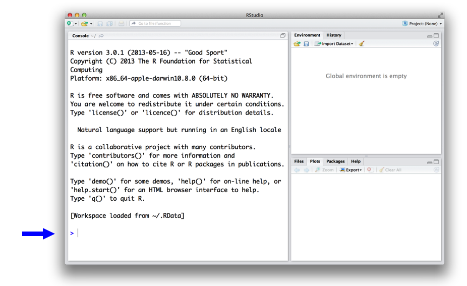
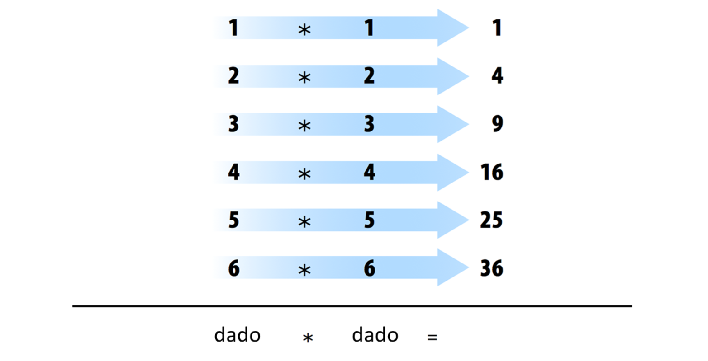
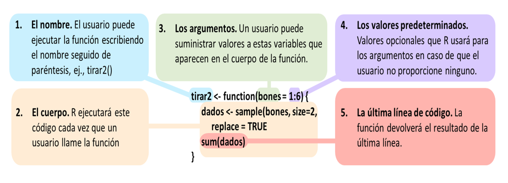

1 Lo Más Básico
Este capítulo proporciona una descripción general amplia del lenguaje R que lo ayudará a programar de inmediato. En él, construirás un par de dados virtuales que puedes usar para generar números aleatorios. No se preocupe si nunca ha programado antes; el capítulo le enseñará todo lo que necesita saber.
Para simular un par de dados, tendrás que destilar cada dado en sus características esenciales. No puede colocar un objeto físico, como un dado, en una computadora (bueno, no sin destornillar algunos tornillos), pero puede guardar información sobre el objeto en la memoria de su computadora.
¿Qué información debe guardar? En general, un dado tiene seis piezas importantes de información: cuando tiras un dado, solo puede dar como resultado uno de los seis números: 1, 2, 3, 4, 5 y 6. Puedes capturar las características esenciales de un dado guardando los números 1, 2, 3, 4, 5 y 6 como un grupo de valores en la memoria de su computadora.
Trabajemos primero en guardar estos números y luego consideremos un método para “lanzar” nuestro dado.
1.1 La Interfaz de Usuario de R
Antes de que pueda pedirle a su computadora que guarde algunos números, necesitará saber cómo hablarle. Ahí es donde entran R y RStudio. RStudio le brinda una manera de comunicarse con su computadora. R le brinda un idioma para hablar. Para comenzar, abra RStudio tal como abriría cualquier otra aplicación en su computadora. Cuando lo haga, debería aparecer una ventana en su pantalla como la que se muestra en la Figura Figura 1.1.
Si aún no tiene R y RStudio instalados en su computadora–o no sabe de lo que estoy hablando– visite el Apéndice A. El apéndice le dará una descripción general de las dos herramientas gratuitas y le indicará cómo descargarlas.
La interfaz de RStudio es simple. Escriba el código R en la línea inferior del panel de la consola de RStudio y luego haga clic en Entrar para ejecutarlo. El código que escribe se llama comando, porque ordenará a su computadora que haga algo por usted. La línea en la que lo escribe se llama línea de comando.
Cuando escribe un comando en la consola y presiona Enter, su computadora ejecuta el comando y le muestra los resultados. Luego, RStudio muestra un mensaje nuevo para su próximo comando. Por ejemplo, si escribe 1 + 1 y pulsa Enter, RStudio mostrará:
> 1 + 1
[1] 2
>Notarás que aparece un [1] al lado de tu resultado. R solo le informa que esta línea comienza con el primer valor en su resultado. Algunos comandos devuelven más de un valor y sus resultados pueden llenar varias líneas. Por ejemplo, el comando 100:130 devuelve 31 valores; crea una secuencia de números enteros del 100 al 130. Observe que aparecen nuevos números entre corchetes al comienzo de la segunda y tercera líneas de salida. Estos números solo significan que la segunda línea comienza con el valor 14 en el resultado y la tercera línea comienza con el valor 25. En su mayoría, puede ignorar los números que aparecen entre corchetes:
> 100:130
[1] 100 101 102 103 104 105 106 107 108 109 110 111 112
[14] 113 114 115 116 117 118 119 120 121 122 123 124 125
[25] 126 127 128 129 130El operador de dos puntos (:) devuelve todos los números enteros entre los dos números enteros especificados antes y después de los dos puntos. Es una manera fácil de crear una secuencia de números.
¿R no es un idioma?
Es posible que me escuche hablar de R en tercera persona. Por ejemplo, podría decir: “Dígale a R que haga esto” o “Dígale a R que haga aquello”, pero, por supuesto, R no puede hacer nada; es solo un idioma. Esta forma de hablar es una forma abreviada de decir: “Dígale a su computadora que haga esto escribiendo un comando en el lenguaje R en su consola RStudio”. Su computadora, y no R, hace el trabajo real.
¿Es esta abreviatura confusa y un poco perezosa de usar? Sí. ¿Lo usa mucha gente? Todos los que conozco, probablemente porque es muy conveniente.
¿Cuándo compilamos?
En algunos lenguajes, como C, Java y FORTRAN, debe compilar su código legible por humanos en un código legible por máquina (a menudo 1 y 0) antes de poder ejecutarlo. Si ha programado en un lenguaje de este tipo antes, puede preguntarse si tiene que compilar su código R antes de poder usarlo. La respuesta es no. R es un lenguaje de programación dinámico, lo que significa que R interpreta automáticamente su código a medida que lo ejecuta.
Si escribe un comando incompleto y presiona Enter, R mostrará un + en la consola, lo que significa que R está esperando que escriba el resto de su comando. Termina el comando o presiona Escape para comenzar de nuevo:
> 5 -
+
+ 1
[1] 4Si escribe un comando que R no reconoce, R devolverá un mensaje de error. Si alguna vez ve un mensaje de error, no entre en pánico. R solo le está diciendo que su computadora no pudo entender o hacer lo que le pidió que hiciera. Luego puede probar un comando diferente en la siguiente línea:
> 3 % 5
Error: unexpected input in "3 % 5"
>Una vez que domines la línea de comando, puedes hacer fácilmente cualquier cosa en R que harías con una calculadora. Por ejemplo, podrías hacer algo de aritmética básica:
2 * 3
## 6
4 - 1
## 3
6 / (4 - 1)
## 2¿Notaste algo diferente en este código? He dejado fuera los > y [1]. Esto hará que el código sea más fácil de copiar y pegar si desea colocarlo en su propia consola.
R trata el carácter del hashtag, #, de una manera especial; R no ejecutará nada que siga a un hashtag en una línea. Esto hace que los hashtags sean muy útiles para agregar comentarios y anotaciones a su código. Los humanos podrán leer los comentarios, pero su computadora los pasará por alto. El hashtag se conoce como símbolo de comentario en R.
En el resto del libro, usaré hashtags para mostrar los resultados de las lineas de código R. Usaré un solo hashtag para agregar mis propios comentarios y un hashtag doble, ##, para mostrar los resultados del código. Evitaré mostrar > y [1] a menos que quiera que los mires.
Cancelar comandos
Algunos comandos de R pueden tardar mucho tiempo en ejecutarse. Puede cancelar un comando una vez que ha comenzado presionando ctrl + c. Tenga en cuenta que R también puede tardar mucho tiempo en cancelar el comando.
Ejercicio 2.1 (Magia con Numeros) Esa es la interfaz básica para ejecutar código R en RStudio. ¿Crees que lo tienes? Si es así, intente realizar estas sencillas tareas. Si ejecuta todo correctamente, debería terminar con el mismo número con el que comenzó:
- Elige cualquier número y súmale 2.
- Multiplica el resultado por 3.
- Resta 6 de la respuesta.
- Divide lo que obtienes por 3.
A lo largo del libro, pondré ejercicios en partes, como el de arriba. Seguiré cada ejercicio con una respuesta modelo, como la siguiente.
Solución. Puede comenzar con el número 10 y luego seguir los siguientes pasos:
10 + 2
## 12
12 * 3
## 36
36 - 6
## 30
30 / 3
## 101.2 Objetos
Ahora que sabes cómo usar R, usémoslo para hacer un dado virtual. El operador : de hace un par de páginas le brinda una buena manera de crear un grupo de números del uno al seis. El operador : devuelve sus resultados como un vector, un conjunto unidimensional de números:
1:6
## 1 2 3 4 5 6¡Eso es todo lo que hay sobre el aspecto de un dado virtual! Pero aún no has terminado. Ejecutar 1:6 generó un vector de números para que lo veas, pero no guardó ese vector en ninguna parte de la memoria de tu computadora. Lo que está viendo son básicamente las huellas de seis números que existieron brevemente y luego se fundieron de nuevo en la memoria RAM de tu computadora. Si desea volver a usar esos números, tendrá que pedirle a su computadora que los guarde en algún lugar. Puede hacerlo creando un objeto de R.
R le permite guardar datos almacenándolos dentro de un objeto R. ¿Qué es un objeto? Solo un nombre que puede usar para recuperar datos almacenados. Por ejemplo, puede guardar datos en un objeto como a o b. Siempre que R encuentre el objeto, lo reemplazará con los datos guardados en su interior, así:
a <- 1
a
## 1
a + 2
## 3¿Qué acaba de suceder?
- Para crear un objeto R, elija un nombre y luego use el símbolo menor que,
<, seguido de un signo menos,-, para guardar datos en él. Esta combinación parece una flecha,<-. R creará un objeto, le dará su nombre y almacenará en él lo que siga a la flecha. Entoncesa <- 1almacena1en un objeto llamadoa. - Cuando le preguntas a R qué hay en
a, R te dice en la siguiente línea. - También puede usar su objeto en nuevos comandos R. Dado que
aalmacenó previamente el valor de1, ahora está agregando1a2.
Entonces, para otro ejemplo, el siguiente código crearía un objeto llamado dado que contiene los números del uno al seis. Para ver lo que está almacenado en un objeto, simplemente escriba el nombre del objeto por sí mismo:
dado <- 1:6
dado
## 1 2 3 4 5 6Cuando crea un objeto, el objeto aparecerá en el panel de Environment de RStudio, como se muestra en la Figura Figura 1.2. Este panel le mostrará todos los objetos que ha creado desde que abrió RStudio.

Puedes nombrar un objeto en R casi como quieras, pero hay algunas reglas. Primero, un nombre no puede comenzar con un número. Segundo, un nombre no puede usar algunos símbolos especiales, como ^, !, $, @, +, -, /, or *:
| Buenos nombres | Nombres que causan error |
|---|---|
| a | 1trial |
| b | $ |
| FOO | ^mean |
| my_var | 2nd |
| .day | !bad |
Mayúsculas
R distingue entre mayúsculas y minúsculas, por lo que nombre y Nombre se referirán a diferentes objetos:
Nombre <- 1
nombre <- 0
Nombre + 1
## 2
Finalmente, R sobrescribirá cualquier información anterior almacenada en un objeto sin pedirle permiso. Por lo tanto, es una buena idea no usar nombres que ya están en uso:
my_number <- 1
my_number
## 1
my_number <- 999
my_number
## 999Puedes ver qué nombres de objetos ya has usado con la función ls:
ls()
## "a" "dado" "my_number" "nombre" "Nombre" También puede ver qué nombres ha utilizado examinando el panel de environment de RStudio.
Ahora tiene un dado virtual que está almacenado en la memoria de su computadora. Puedes acceder a él cuando quieras escribiendo la palabra dado. Entonces, ¿qué puedes hacer con este dado? Bastante. R reemplazará un objeto con su contenido siempre que el nombre del objeto aparezca en un comando. Entonces, por ejemplo, puedes hacer todo tipo de operaciones matemáticas con el dado. Las matemáticas no son tan útiles para lanzar dados, pero la manipulación de conjuntos de números será su día a día como científico de datos. Así que echemos un vistazo a cómo hacer eso:
dado - 1
## 0 1 2 3 4 5
dado / 2
## 0.5 1.0 1.5 2.0 2.5 3.0
dado * dado
## 1 4 9 16 25 36Si eres un gran fanático del álgebra lineal (¿y quién no lo es?), puedes notar que R no siempre sigue las reglas de la multiplicación de matrices. En su lugar, R utiliza ejecución por elementos. Cuando manipulas un conjunto de números, R aplicará la misma operación a cada elemento del conjunto. Entonces, por ejemplo, cuando ejecuta dado - 1, R resta uno de cada elemento de dado.
Cuando usa dos o más vectores en una operación, R alineará los vectores y realizará una secuencia de operaciones individuales. Por ejemplo, cuando ejecuta dado * dado, R alinea los dos vectores dado y luego multiplica el primer elemento del vector 1 por el primer elemento del vector 2. R luego multiplica el segundo elemento del vector 1 por el segundo elemento del vector 2, y así sucesivamente, hasta que se hayan multiplicado todos los elementos. El resultado será un nuevo vector de la misma longitud que los dos primeros, como se muestra en la Figura Figura 1.3.

Si le da a R dos vectores de longitudes desiguales, R repetirá el vector más corto hasta que sea tan largo como el vector más largo y luego hará los cálculos, como se muestra en la Figura Figura 1.4. Este no es un cambio permanente: el vector más corto tendrá su tamaño original después de que R haga los cálculos. Si la longitud del vector largo no es divisible equitativamente por el vctor corto, R devolverá un mensaje de advertencia. Este comportamiento se conoce como reciclado de vectores y ayuda a R a realizar operaciones por elementos:
1:2
## 1 2
1:4
## 1 2 3 4
dado
## 1 2 3 4 5 6
dado + 1:2
## 2 4 4 6 6 8
dado + 1:4
## 2 4 6 8 6 8
Warning message:
In dado + 1:4 :
longer object length is not a multiple of shorter object length
Las operaciones basadas en elementos son una característica muy útil en R porque manipulan grupos de valores de forma ordenada. Cuando comience a trabajar con conjuntos de datos, las operaciones por elementos garantizarán que los valores de una observación o caso solo se emparejen con valores de la misma observación o caso. Las operaciones basadas en elementos también facilitan la escritura de sus propios programas y funciones en R.
Pero no creas que R ha renunciado a la multiplicación de matrices tradicional. Solo tienes que pedirlo cuando quieras. Puedes hacer multiplicaciones internas con el operador %*% y multiplicaciones externas con el operador %o%:
dado %*% dado
## 91
dado %o% dado
## [,1] [,2] [,3] [,4] [,5] [,6]
## [1,] 1 2 3 4 5 6
## [2,] 2 4 6 8 10 12
## [3,] 3 6 9 12 15 18
## [4,] 4 8 12 16 20 24
## [5,] 5 10 15 20 25 30
## [6,] 6 12 18 24 30 36También puedes hacer cosas como transponer una matriz con t y tomar su determinante con det.
No se preocupe si no está familiarizado con estas operaciones. Son fáciles de buscar y no los necesitará para este libro.
Ahora que puede hacer operaciones matemáticas con su objeto dado, veamos cómo podría “tirarlo”. Lanzar el dado requerirá algo más sofisticado que la aritmética básica; deberá seleccionar aleatoriamente uno de los valores del dado. Y para eso, necesitarás una función.
1.3 Funciones
R viene con muchas funciones que puede usar para realizar tareas sofisticadas como el muestreo aleatorio. Por ejemplo, puede redondear un número con la función round o calcular su factorial con la función factorial. Usar una función es bastante simple. Simplemente escriba el nombre de la función y luego los datos sobre los que desea que opere la función entre paréntesis::
round(3.1415)
## 3
factorial(3)
## 6Los datos que pasa a la función se denominan argumento de la función. El argumento puede ser datos sin procesar, un objeto R o incluso los resultados de otra función R. En este último caso, R trabajará desde la función más interna hacia la más externa, como en la Figura Figura 1.5.
mean(1:6)
## 3.5
mean(dado)
## 3.5
round(mean(dado))
## 4
Por suerte para nosotros, hay una función R que puede ayudar a “tirar” el dado. Puede simular una tirada del dado con la función sample de R. sample toma dos argumentos: un vector llamado x y un número llamado size. sample devolverá elementos de size del vector:
sample(x = 1:4, size = 2)
## 3 2Para tirar el dado y obtener un número de vuelta, establezca x en dado y muestree un elemento de él. Obtendrá un número nuevo (quizás diferente) cada vez que lo haga rodar:
sample(x = dado, size = 1)
## 2
sample(x = dado, size = 1)
## 1
sample(x = dado, size = 1)
## 6Muchas funciones de R toman múltiples argumentos que las ayudan a hacer su trabajo. Puede dar a una función tantos argumentos como desee siempre que separe cada argumento con una coma.
Es posible que hayas notado que establecí dado y 1 iguales a los nombres de los argumentos en sample, x y size. Cada argumento en cada función de R tiene un nombre. Puede especificar qué datos deben asignarse a qué argumento estableciendo un nombre igual a data, como en el código anterior. Esto se vuelve importante a medida que comienza a pasar múltiples argumentos a la misma función; los nombres lo ayudan a evitar pasar los datos incorrectos al argumento incorrecto. Sin embargo, el uso de nombres es opcional. Notará que los usuarios de R no suelen usar el nombre del primer argumento en una función. Por lo tanto, es posible que vea el código anterior escrito como:
sample(dado, size = 1)
## 2A menudo, el nombre del primer argumento no es muy descriptivo y, de todos modos, suele ser obvio a qué se refiere el primer dato.
Pero, ¿cómo saber qué nombres de argumento usar? Si intenta usar un nombre que una función no espera, es probable que obtenga un error:
round(3.1415, corners = 2)
## Error in round(3.1415, corners = 2) : unused argument(s) (corners = 2)Si no está seguro de qué nombres usar con una función, puede buscar los argumentos de la función con args. Para hacer esto, coloque el nombre de la función entre paréntesis detrás de args. Por ejemplo, puede ver que la función round toma dos argumentos, uno llamado x y otro llamado digits:
args(round)
## function (x, digits = 0)
## NULL¿Notaste que args muestra que el argumento digits de round ya está establecido en 0? Con frecuencia, una función R tomará argumentos opcionales como digits. Estos argumentos se consideran opcionales porque vienen con un valor predeterminado. Puede pasar un nuevo valor a un argumento opcional si así lo desea, y R utilizará el valor predeterminado si no proporciona uno nuevo. Por ejemplo, “round” redondeará su número a 0 dígitos más allá del punto decimal de forma predeterminada. Para anular el valor predeterminado, proporcione su propio valor para digits:
round(3.1415)
## 3
round(3.1415, digits = 2)
## 3.14Debe escribir los nombres de cada argumento después del primero o dos cuando llame a una función con múltiples argumentos. ¿Por qué? Primero, esto lo ayudará a usted y a otros a comprender su código. Por lo general, es obvio a qué argumento se refiere su primera entrada (y, a veces, también la segunda entrada). Sin embargo, necesitaría una memoria grande para recordar los argumentos tercero y cuarto de cada función R. En segundo lugar, y más importante, escribir los nombres de los argumentos evita errores.
Si no escribe los nombres de sus argumentos, R hará coincidir sus valores con los argumentos de su función por orden. Por ejemplo, en el siguiente código, el primer valor, dado, coincidirá con el primer argumento de sample, que se llama x. El siguiente valor, 1, coincidirá con el siguiente argumento, size:
sample(dado, 1)
## 2A medida que proporciona más argumentos, es más probable que su orden y el orden de R no coincidan. Como resultado, los valores pueden pasarse al argumento incorrecto. Los nombres de los argumentos evitan esto. R siempre hará coincidir un valor con el nombre de su argumento, sin importar dónde aparezca en el orden de los argumentos:
sample(size = 1, x = dado)
## 21.3.1 Muestra con reemplazo
Si configura size = 2, puede casi simular un par de dados. Antes de ejecutar ese código, piense por un minuto por qué ese podría ser el caso. sample devolverá dos números, uno para cada dado:
sample(dado, size = 2)
## 3 4Dije que esto “casi” funciona porque este método hace algo divertido. Si lo usa muchas veces, notará que el segundo dado nunca tiene el mismo valor que el primero, lo que significa que nunca obtendrá algo como un par de tres o un par de unos. ¿Qué esta pasando?
Por defecto, sample construye una muestra sin reemplazo. Para ver lo que esto significa, imagina que sample coloca todos los valores de dado en un frasco o urna. Luego imagine que sample alcanza el frasco y extrae valores uno por uno para construir su muestra. Una vez que se ha extraído un valor del frasco, sample lo deja a un lado. El valor no vuelve al frasco, por lo que no se puede volver a extraer. Entonces, si sample selecciona un seis en su primer sorteo, no podrá seleccionar un seis en el segundo sorteo; seis ya no está en el frasco para ser seleccionado. Aunque sample crea su muestra electrónicamente, sigue este comportamiento aparentemente físico.
Un efecto secundario de este comportamiento es que cada sorteo depende de los sorteos anteriores. Sin embargo, en el mundo real, cuando lanzas un par de dados, cada dado es independiente del otro. Si el primer dado sale seis, no impide que el segundo dado salga seis. De hecho, no influye en el segundo dado de ninguna manera. Puede recrear este comportamiento en sample agregando el argumento replace = TRUE:
sample(dado, size = 2, replace = TRUE)
## 5 5El argumento replace = TRUE hace que sample muestree con reemplazo. Nuestro ejemplo de frasco proporciona una buena manera de comprender la diferencia entre el muestreo con reemplazo y sin reemplazo. Cuando sample usa reemplazo, extrae un valor del frasco y registra el valor. Luego vuelve a poner el valor en el frasco. En otras palabras, sample reemplaza cada valor después de cada sorteo. Como resultado, sample puede seleccionar el mismo valor en el segundo sorteo. Cada valor tiene la posibilidad de ser seleccionado cada vez. Es como si cada sorteo fuera el primer sorteo.
El muestreo con reemplazo es una manera fácil de crear muestras aleatorias independientes. Cada valor en su muestra será una muestra de tamaño uno que es independiente de los otros valores. Esta es la forma correcta de simular un par de dados.
sample(dado, size = 2, replace = TRUE)
## 2 4Felicítate a ti mismo; ¡Acabas de ejecutar tu primera simulación en R! Ahora tiene un método para simular el resultado de lanzar un par de dados. Si desea sumar los dados, puede ingresar su resultado directamente en la función sum:
dados <- sample(dado, size = 2, replace = TRUE)
dados
## 2 4
sum(dados)
## 6¿Qué pasaría si llamas dados varias veces? ¿Generaría R un nuevo par de valores de dados cada vez? Probemos:
dados
## 2 4
dados
## 2 4
dados
## 2 4No. Cada vez que llame a dados, R le mostrará el resultado de esa vez que llamó a sample y guardó la salida en dados. R no volverá a ejecutar sample(dado, 2, replace = TRUE) para crear una nueva tirada de dados. Esto es un alivio en cierto modo. Una vez que guarda un conjunto de resultados en un objeto de R, esos resultados no cambian. La programación sería bastante difícil si los valores de sus objetos cambiaran cada vez que los llama.
Sin embargo, sería conveniente tener un objeto que pueda volver a tirar los dados cada vez que lo llames. Puede hacer tal objeto escribiendo su propia función de R.
1.4 Escribiendo Sus Propias Funciones
Para recapitular, ya tiene un código de R en funcionamiento que simula lanzar un par de dados:
dado <- 1:6
dados <- sample(dado, size = 2, replace = TRUE)
sum(dados)Puede volver a escribir este código en la consola en cualquier momento que desee volver a tirar los dados. Sin embargo, esta es una forma incómoda de trabajar con el código. Sería más fácil usar su código si lo envolviera en su propia función, que es exactamente lo que haremos ahora. Vamos a escribir una función llamada tirar que puedes usar para lanzar tus dados virtuales. Cuando hayas terminado, la función funcionará así: cada vez que llames a tirar(), R devolverá la suma de tirar dos dados:
tirar()
## 8
tirar()
## 3
tirar()
## 7Las funciones pueden parecer misteriosas o sofisticadas, pero son solo otro tipo de objeto de R. En lugar de contener datos, contienen código. Este código se almacena en un formato especial que facilita su reutilización en situaciones nuevas. Puede escribir sus propias funciones recreando este formato.
1.4.1 El Constructor de Funciones
Cada función en R tiene tres partes básicas: un nombre, un cuerpo de código y un conjunto de argumentos. Para crear su propia función, debe replicar estas partes y almacenarlas en un objeto de R, esto lo puede hacer con la función function. Para hacer esto, llama a function() y sigue con un par de llaves, {}:
mi_funcion <- function() {}function construirá una función a partir de cualquier código R que coloque entre las llaves. Por ejemplo, puede convertir su código de dados en una función llamando:
tirar <- function() {
dado <- 1:6
dados <- sample(dado, size = 2, replace = TRUE)
sum(dados)
}Observe que he aplicado sangría a cada línea de código entre las llaves. Esto hace que el código sea más fácil de leer para usted y para mí, pero no tiene impacto en cómo se ejecuta el código. R ignora los espacios y los saltos de línea y ejecuta una expresión completa a la vez.
Simplemente presione la tecla Enter entre cada línea después de la primera llave, {. R esperará a que escribas la última llave, }, antes de responder.
No olvide guardar la salida de function en un objeto de R. Este objeto se convertirá en su nueva función. Para usarlo, escriba el nombre del objeto seguido de un paréntesis de apertura y cierre:
tirar()
## 9Puede pensar en los paréntesis como el “disparador” que hace que R ejecute la función. Si escribe el nombre de una función sin los paréntesis, R le mostrará el código que está almacenado dentro de la función. Si escribe el nombre con los paréntesis, R ejecutará ese código:
tirar
## function() {
## dado <- 1:6
## dados <- sample(dado, size = 2, replace = TRUE)
## sum(dados)
## }
tirar()
## 6El código que coloca dentro de su función se conoce como el cuerpo de la función. Cuando ejecuta una función en R, R ejecutará todo el código en el cuerpo y luego devolverá el resultado de la última línea de código. Si la última línea de código no devuelve un valor, tampoco lo hará su función, por lo que debe asegurarse de que su última línea de código devuelva un valor. Una forma de verificar esto es pensar en lo que sucedería si ejecutara el cuerpo del código línea por línea en la consola. ¿Mostraría R un resultado después de la última línea, o no?
Aquí hay un código que mostraría un resultado:
dados
1 + 1
sqrt(2)Y aquí hay un código que no:
dados <- sample(dado, size = 2, replace = TRUE)
dos <- 1 + 1
a <- sqrt(2)¿Notas el patrón? Estas líneas de código no devuelven un valor a la línea de comando; guardan un valor a un objeto.
1.5 Argumentos
¿Qué pasa si eliminamos una línea de código de nuestra función y cambiamos el nombre dado a bones, así?
tirar2 <- function() {
dados <- sample(bones, size = 2, replace = TRUE)
sum(dados)
}Ahora obtendré un error cuando ejecute la función. La función necesita el objeto bones para hacer su trabajo, pero no se puede encontrar ningún objeto llamado bones:
tirar2()
## Error in sample(bones, size = 2, replace = TRUE) :
## object 'bones' not foundPuedes proporcionar bones cuando llamas a tirar2 si conviertes a bones en un argumento de la función. Para hacer esto, pon el nombre bones entre los paréntesis que siguen a function cuando definas tirar2:
tirar2 <- function(bones) {
dados <- sample(bones, size = 2, replace = TRUE)
sum(dados)
}Ahora tirar2 funcionará siempre y cuando proporciones bones cuando llames a la función. Puede aprovechar esto para lanzar diferentes tipos de dados cada vez que llamas tirar2. ¡Calabozos y Dragones, aquí vamos!
Recuerda, estamos lanzando pares de dados:
tirar2(bones = 1:4)
## 3
tirar2(bones = 1:6)
## 10
tirar2(1:20)
## 31Tenga en cuenta que tirar2 seguirá dando un error si no proporciona un valor para el argumento bones cuando llame a tirar2:
tirar2()
## Error in sample(bones, size = 2, replace = TRUE) :
## argument "bones" is missing, with no defaultPuede evitar este error dando al argumento bones un valor predeterminado. Para hacer esto, establece bones igual a un valor cuando definas tirar2:
tirar2 <- function(bones = 1:6) {
dados <- sample(bones, size = 2, replace = TRUE)
sum(dados)
}Ahora puede proporcionar un nuevo valor para bones si lo desea, y tirar2 usará el valor predeterminado si no lo desea:
tirar2()
## 9Puede dar a sus funciones tantos argumentos como desee. Simplemente enumere sus nombres, separados por comas, entre los paréntesis que siguen a function.Cuando se ejecuta la función, R reemplazará cada nombre de argumento en el cuerpo de la función con el valor que el usuario proporciona para el argumento. Si el usuario no proporciona un valor, R reemplazará el nombre del argumento con el valor predeterminado del argumento (si definió uno).
Para resumir, function te ayuda a construir tus propias funciones de R. Usted crea un cuerpo de código para que su función se ejecute escribiendo código entre las llaves que siguen a function. Usted crea argumentos para que su función los use proporcionando sus nombres entre los paréntesis que siguen a function. Finalmente, le da un nombre a su función guardando su salida en un objeto de R, como se muestra en la Figura Figura 1.6.
Una vez que haya creado su función, R la tratará como cualquier otra función en R. Piense en lo útil que es. ¿Alguna vez ha intentado crear una nueva opción de Excel y agregarla a la barra de menú de Microsoft? ¿O una nueva animación de diapositivas y agregarla a las opciones de Powerpoint? Cuando trabajas con un lenguaje de programación, puedes hacer este tipo de cosas. A medida que aprenda a programar en R, podrá crear herramientas nuevas, personalizadas y reproducibles para usted cuando lo desee. Proyecto 3: Máquina Tragamonedas te enseñará mucho más sobre escribir funciones en R.

function para crear estas partes. Asigne el resultado a un nombre, para que pueda llamar a la función más tarde.
1.6 Scripts
¿Qué pasa si quieres editar tirar2 de nuevo? Podría regresar y volver a escribir cada línea de código en tirar2, pero sería mucho más fácil si tuviera un borrador del código para empezar. Puede crear un borrador de su código a medida que avanza utilizando un script de R. Un script de R es solo un archivo de texto sin formato en el que guarda el código R. Puede abrir un script de R en RStudio yendo a File> New File> R script en la barra de menú. RStudio luego abrirá un script nuevo sobre el panel de su consola, como se muestra en la Figura Figura 1.7.
Le recomiendo encarecidamente que escriba y edite todo su código de R en un script antes de ejecutarlo en la consola. ¿Por qué? Este hábito crea un registro reproducible de su trabajo. Cuando termine el día, puede guardar su secuencia de comandos y luego usarla para volver a ejecutar todo el análisis al día siguiente. Los scripts también son muy útiles para editar y corregir su código, y hacen una buena copia de su trabajo para compartir con otros. Para guardar un script, haga clic en el panel de scripts y luego vaya a File > Save as en la barra de menú.

RStudio viene con muchas funciones integradas que facilitan el trabajo con scripts. Primero, puede ejecutar automáticamente una línea de código en un script haciendo clic en el botón Run, como se muestra en la Figura Figura 1.8.
R ejecutará cualquier línea de código en la que esté el cursor. Si tiene una sección completa resaltada, R ejecutará el código resaltado. Como alternativa, puede ejecutar todo el script haciendo clic en el botón Source. ¿No te gusta hacer clic en los botones? Puede usar Control + Enter como acceso directo para el botón Ejecutar. En Mac, eso sería Comando + Enter.

Si no está convencido acerca de los scripts, pronto lo estará. Se convierte en una molestia escribir código de varias líneas en la línea de comando de una sola línea de la consola. Evitemos ese dolor de cabeza y abramos su primer script ahora antes de pasar al siguiente capítulo.
Extraer función
RStudio viene con una herramienta que puede ayudarlo a crear funciones. Para usarlo, resalte las líneas de código en su secuencia de comandos R que desea convertir en una función. Luego haga clic en Code > Extract Function en la barra de menú. RStudio le pedirá un nombre de función para usar y luego envolverá su código en una llamada de function. Escaneará el código en busca de variables indefinidas y las usará como argumentos.
Es posible que desee volver a comprobar el trabajo de RStudio. Asume que su código es correcto, por lo que si hace algo sorprendente, es posible que tenga un problema en su código.
1.7 Resumen
Ya has cubierto mucho terreno. Ahora tiene un dado virtual almacenado en la memoria de su computadora, así como su propia función de R que lanza un par de dados. También ha comenzado a hablar el lenguaje R.
Como has visto, R es un lenguaje que puedes usar para hablar con tu computadora. Escribes comandos en R y los ejecutas en la línea de comandos para que tu computadora los lea. Su computadora a veces responderá–por ejemplo, cuando cometa un error–pero generalmente solo hace lo que le pide y luego muestra el resultado.
Los dos componentes más importantes del lenguaje R son los objetos, que almacenan datos, y las funciones, que manipulan datos. R también usa una gran cantidad de operadores como +, -, *, / y <- para realizar tareas básicas. Como científico de datos, usará objetos de R para almacenar datos en la memoria de su computadora y usará funciones para automatizar tareas y realizar cálculos complicados. Examinaremos los objetos con más profundidad más adelante en Proyecto 2: Baraja de Cartas y profundizaremos en las funciones en Proyecto 3: Máquina Tragamonedas. El vocabulario que ha desarrollado aquí hará que cada uno de esos proyectos sea más fácil de entender. Sin embargo, aún no hemos terminado con tus dados.
En Paquetes y páginas de ayuda, , ejecutará algunas simulaciones con sus dados y construirá sus primeros gráficos en R. También verá dos de los componentes más útiles del lenguaje R: Paquetes de R, que son colecciones de funciones escritas por la talentosa comunidad de desarrolladores de R, y documentación de R, que es una colección de páginas de ayuda integradas en R que explica cada función y conjunto de datos en el lenguaje.